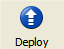

You can deploy your project to Google App Engine directly from the Launcher. Once deployed, the application is running on Google App Engine, and is available for use on the Internet.
For more information about deploying applications, see the Google App Engine documentation.
To deploy a project to Google App Engine:
If you have not already done so, sign in or register with Google App Engine, then create an application ID for the application. Edit the project's app.yaml file to have the correct application ID.
Select the project in the project list.
Click the "Deploy" button.

Or: Select the menu option Control > Deploy.
Or: Press Control-D.
A dialog opens prompting for your Google account username and password.
Enter your Google account username and password, then click "Sign In." The Log Console window opens and displays a progress report and messages about the deployment. When the deployment is complete, you can close this window.